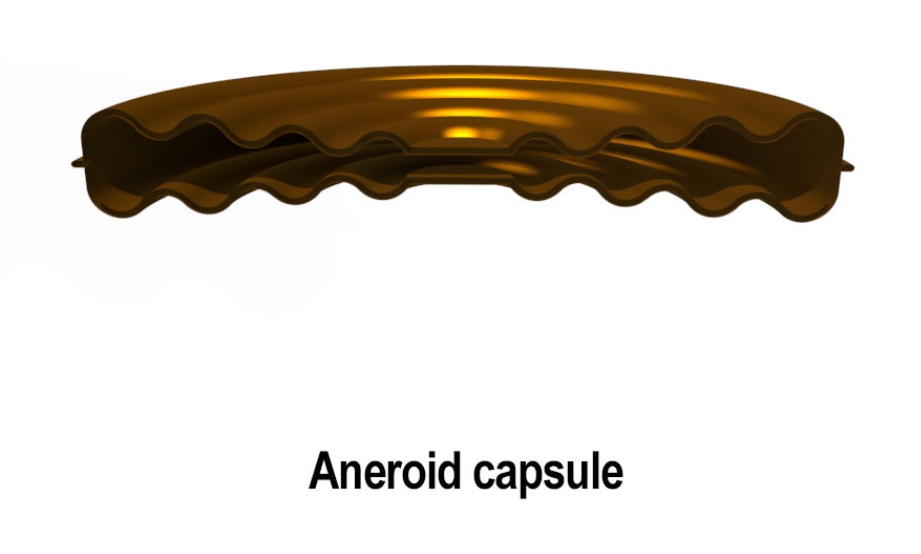

Pressure Sensing
Units and conversions
- Pressure is a force measured of a unit area
- Can be measured in
- pounds per square foot (lb/ft$^2$)
- pounds per square inch (lb/in$^2$)
- Newtons per square meter (N/m$^2$)
- Pascal (Pa)
- Inches of Mercury (inHg)
- Bar
- A bar is an approximation to sea level pressure, 100 000 pa
- Aviation uses hPa which is equivalent to 1000hpa
- Approximate conversion from lb/in$^2$ to bar is 1 bar = 14.5 PSI
Absolute and Differential pressure sensors
- Absolute pressure is the total pressure measured relative to a perfect vacuum
- Differential pressure is how much pressure exceeds or is less than the absolute
- The sensors used to detect defferential and sometimes absolute pressure are:
- A diaphragm
- An aneroid Capsule
- A Pressure capsule
- Bellows
- a Bourden Tube
- Pressure transducers
Diaphragms
- Thin discs fixed at the edges which distort under pressure
- distortion drives an indicator through a system of gears
- Rarely used to indicate system pressures, because maximum deflection of a diaphragm is small
Aneroid capsules
- Sealed capsule with most of the air drawn out
- Very low internal pressure
- As the altitude increases the capsule expands
- Measures absolute pressure, but only a low range of pressure

Pressure Capsule
- Like an aneroid capsule, but they are not sealed
- Fed with the pressure to be sensed
- Air outside capsule us usually at atmospheric pressure
- The distortion is a measurement of the extra pressure being sensed over and above atmospheric pressure
- Detect differential pressure
- Still only a limited ability to expand and contract

Bellows
- To increase the movement of capsules, they can be stacked together to make Bellows
- Can be completely sealed aneroid bellows or pressure bellows
- Allows for more expansion, so it can measure a medium range of pressures
- A spring can be used to return the bellow to their natural length once the pressure is removed
- Typical application would be to sense Engine Manifold Pressure

Bourden Tube
- Tube is curved like a 'C' fixed at one end and has an oval cross-section
- Pressure is fed into the tube at the fixed end and the moveable end is sealed
- Tries to straighten out under pressure
- Movement, Via a magnifier linkage operates the indicating mechanism
- Linked to a gauge with temperature compensation
- They can indicate a large range of pressure but generally are associated with high pressure measurement
Pressure Transducer
- A device that changes an input parameter such as temperature or pressure into a different output parameter, i.e. an electrical signal
-
Pressure sensed by the transducer acts on a stainless steel diaphragm presses on a resistive element that changes its resistance depending on strain
- Can be referred to as a strain gauge
-
Wired into a Wheatstone bridge
- Not independent of aircraft electrical system
- Advantage is it can indicate remotely
- Simply measured desired parameter at source and send signal back to the gauge
Pitot Static System
Dynamic Pressure
- An aircraft sitting stationary will be subject to static air pressure
- As it moves through the air wind resistance, pressure acting on the front of the aircraft
- Dynamic pressure is proportional to aircraft speed through the air
- Dynamic Pressure = $\frac{1}{2} \rho V^2$.
- $\rho$ = Air Density
- V = True velocity of the aircraft
- Important because it represents the pressure of air flowing over the aircraft, which in turn relates to the lift and drag it experiences
Static Pressure vs. Dynamic Pressure
| Pressure Type | Definition |
|---|---|
| Static Pressure | Atmospheric pressure |
| Dynamic Pressure | Kinetic energy of the air converted into pressure energy |
The Pitot Tube
- Records the total pressure acting on the front of an aircraft
- Total Pressure = Dynamic pressure + Static Pressure
Finding Dynamic Pressure
- To find dynamic pressure we need to sense static pressure
- Dynamic pressure = Total pressure - Static Pressure
Static Ports
- Used to sense static pressure
- Holes in the port are placed at right angles to the airflow to avoid detecting dynamic pressure
Combination pressure head
- Combines the Pitot and Static pressure sensors into a single head
- located outside boundary layer
- Heater element prevents ice blockage
- Drain hole allows water to drain away

Large Aircraft systems
- Large aircraft have more complex systems to give independent feeds to Capt and F/O systems
- Fed through an 2 Air Data computers
Position Error
- The sum of any error detected in the detected static pressure
-
Two sub categories
- Configuration Error (Predictable)
- Maneuver Error (Not Predictable)
-
Varies with TAS and AOA
Configuration Error
- Error induced by the configuration of the aircraft
- Flaps, Speed, Undercarriage Position, AOA
- Calculated in testing and accounted for
- May not be accounted for in standby instruments
Maneuver Error
- Error induced by Rolling, Pitching or Yawing or Random wind gusts
- Can not be programmed out
- Not common on large aircraft due to lack of extreme maneuvers
- Can be minimized with connected static ports on both side of the fuselage
Angle of Attack Sensors
- AOA is referred to as "Alpha" $\alpha$
- Angle between the Chord line and relative airflow
- More important near the stall and in emergencies as it defines stall in all conditions of flight
- Two Sensor forms:
- Vane that is free to line up with Relative Air Flow
- Conical probe with slots above and below the zero alpha datum which measure relative pressure
Vane Type Sensor
- Small airfoils free to rotate and line up with relative airflow
- Positioned clear of any airflow influenced by wings or engine pods
- Position is measured by a transducer (synchro-transmitter) and set electrically to flight systems
- Heated to prevent Ice
Pressure Type Alpha Sensor
- Conical probe at right angles to the airflow
- Free to rotate in the airflow with sensing holes or slows at 90° to each other
- Difference in recorded pressure causes the probe to rotate in the airflow until pressures are equal and RAF is determined
- Potentiometer feeds the probe position to the ADC
- Heated to prevent Ice